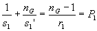
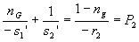
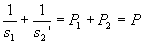
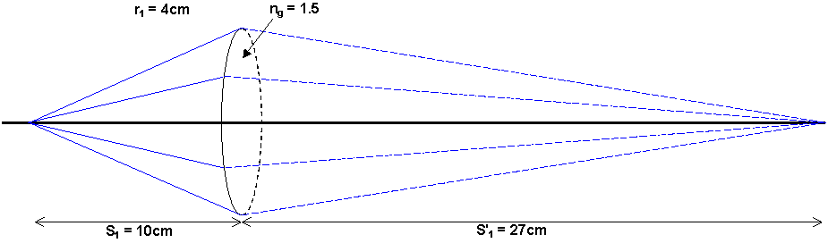
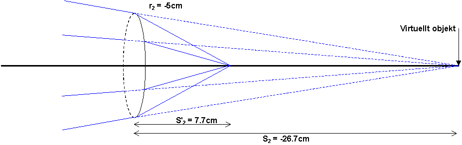

Härledning av tunn linsformel
I den första ytan gäller

Bildavståndet i detta blir objektsavstånd i nästa yta, fast med omvänt tecken. I den andra ytan får vi då:

Om dessa läggs ihop (vänsterleden för sig och högerleden för sig) får vi:

Nedan finns figurer till ett genomräknat exempel
Objektet ligger 10cm före linsen, n=1.5 och krökningsradierna är 4cm och 5cm.
Figurer och resultat finns med, men inte själva räkningen. Gissa varför???
 det var yta 1 det.
